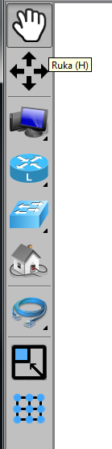
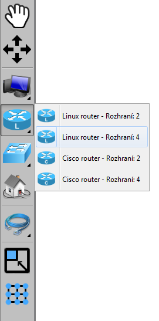

Tutorial 1: Editační režim
- Úvodní obrazovka
- Vytvoření nového projektu
- Vkládání komponent
- Spojování komponent
- Manipulace se sítí
- Nastavení parametrů komponent
- Nastavení zobrazených detailů
- Uložení projektu
Vkládání komponent
Nejdříve začneme výběrem správného nástroje
Menu s nástroji
Vlevo na obrazovce je menu s nástroji. Nástroje jsou následující:
- Ruka - nástroj pro manipulaci s komponentami (klávesová zkratka H)
- Posuv - nástroj pro posun celé plochy (klávesová zkratka M)
- Koncová zařízení - menu s koncovými zařízeními
- Routery - menu s výběrem routerů
- Switche - menu s výběrem switchů
- Reálný počítač - komponenta reprezentující reálný počítač
- Kabely - menu s výběrem kabelů
- Zmenšení plochy - nástroj pro zmenšení kreslící plochy
- Zarovnat do mřížky - zarovná komponenty do neviditelné mřížky
Menu funguje tak, že pokud vidíte u ikony vpravo dole černý trojůhelník, tak se menu dá "rozbalit" pravým tlačítkem myši. Na levé tlačítko reaguje menu tak, že se vybere aktuální nástroj v podmenu.
Začneme výberem nástroje. Pravým tlačítkem myši otevřeme menu s Routery a vybereme Linux router se čtyřmi rozhraními.
Vložení komponenty
Myší přejedeme na kreslící plochu a levým tlačítkem umístíme router. Ten se umístí přesně tam, kde jsme klikli.

Poté přidáme do plochy dalších několik komponent, například takto:

Další částí tutorialu je: Spojování komponent.